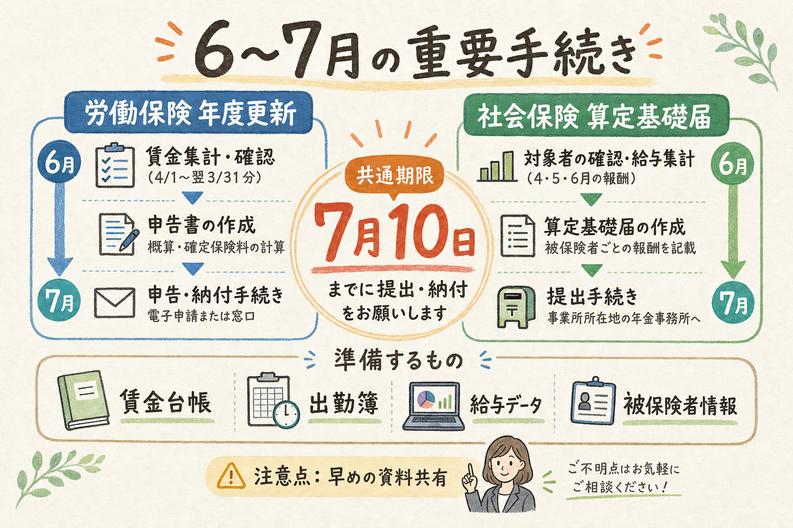
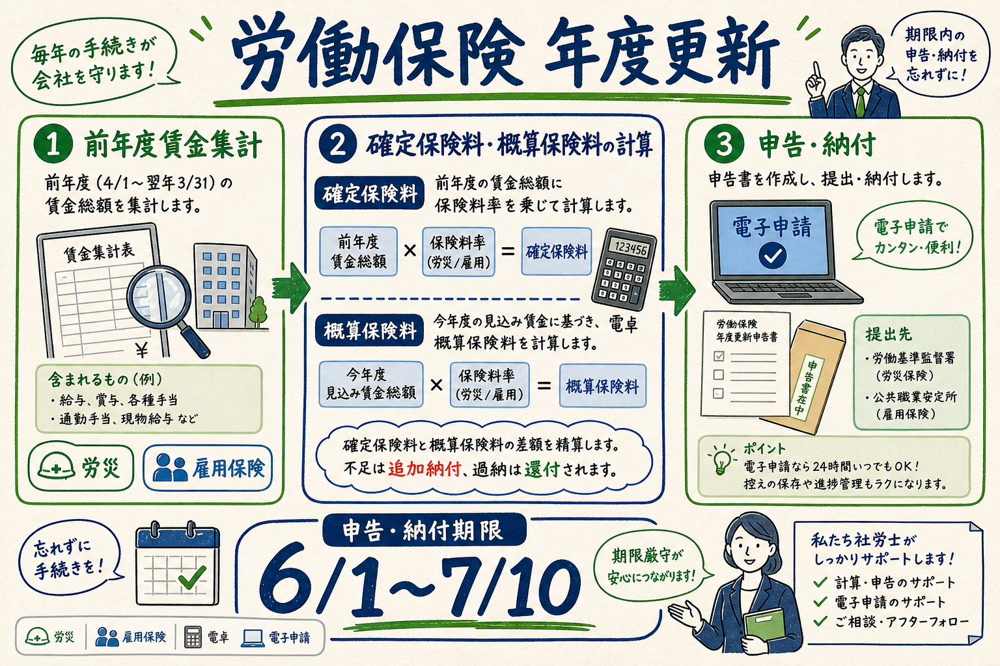
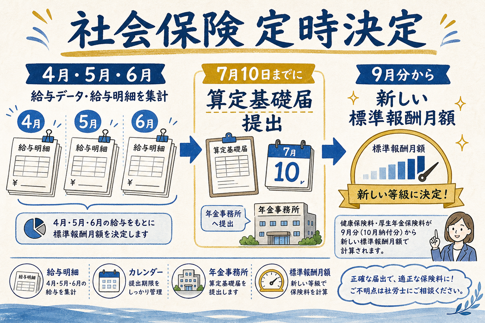

ANNUAL LABOR & SOCIAL INSURANCE PROCEDURES
6〜7月に集中する
2つの重要手続き
労働保険の「年度更新」と、社会保険の「定時決定（算定基礎届）」は、どちらも毎年7月10日が大きな節目です。ただし、見ている保険・集計する数字・反映時期が異なります。
この資料で伝えたいこと
- 年度更新は「労災・雇用保険料」を年1回精算・見込み計算する手続きです。
- 定時決定は「健康保険・厚生年金保険」の標準報酬月額を年1回見直す手続きです。
- どちらも給与・賃金データの確認が重要なので、早めの資料共有が安全です。

期限は7月10日令和8年度は金曜日。年度更新期間は6月1日〜7月10日。
使う数字が違う年度更新は前年度賃金総額中心。算定は4〜6月報酬中心。
早めの確認が安全賃金台帳・給与データ・加入者情報の整合確認が鍵。
新
関連する顧問先向け説明ページ
介護休業制度・介護休暇・給付金・2025年改正をまとめた説明ページを追加しました。
介護休業制度の概要ガイドを開く
仕事と介護の両立支援制度を、法律知識がない方にも確認しやすいよう図解付きで整理しています。
時間単位年休制度の実務整理を開く
時間単位年休の導入要件、労使協定事項、年5日義務への不算入などを図解付きで整理しています。
01
労働保険の年度更新とは
労災保険・雇用保険について、前年度分を確定し、新年度分を概算で申告・納付する手続きです。

客観整理
- 対象は主に労災保険・雇用保険です。
- 令和8年度の年度更新期間は、6月1日（月）〜7月10日（金）です。
- 申告書は、都道府県労働局・労働基準監督署への郵送、または電子申請等で提出できます。
- 全期・第1期の通常納期限も令和8年7月10日です。
労災保険雇用保険確定保険料概算保険料
実務上のポイント：年度更新では、賃金総額の集計範囲、雇用保険対象者、役員・兼務役員・短時間勤務者等の扱いを確認します。建設業等では事業の種類や一括有期事業の整理も重要です。
出典：厚生労働省「労働保険年度更新に係るお知らせ」（確認日：2026-06-04）
02
社会保険の定時決定とは
健康保険・厚生年金保険について、実際の報酬と標準報酬月額のズレを年1回見直す手続きです。
客観整理
- 7月1日現在の被保険者・70歳以上被用者について、原則として算定基礎届を提出します。
- 4月・5月・6月の報酬月額をもとに標準報酬月額を決定します。
- 提出期限は毎年7月10日までです。10日が土日の場合は翌営業日です。
- 決定された標準報酬月額は、9月から翌年8月までの各月に適用されます。
健康保険厚生年金保険4〜6月報酬9月から適用

実務上のポイント：月額変更届の対象者、6月1日以降取得者、6月30日以前退職者、8月・9月随時改定予定者など、算定基礎届の対象外・特殊処理になる人を丁寧に確認します。
出典：日本年金機構「定時決定（算定基礎届）」「令和8年度の算定基礎届のご提出について」（確認日：2026-06-04）
03
2つの手続きの違い
どちらも給与・賃金情報を扱いますが、目的と反映先が異なります。
| 項目 | 労働保険 年度更新 | 社会保険 定時決定（算定基礎届） |
|---|---|---|
| 対象制度 | 労災保険・雇用保険 | 健康保険・厚生年金保険 |
| 目的 | 前年度の保険料を確定し、新年度の概算保険料を申告・納付する | 標準報酬月額を実際の報酬に近づけるため、年1回見直す |
| 主な集計 | 前年度の賃金総額、雇用保険対象賃金など | 4月・5月・6月の報酬月額、支払基礎日数など |
| 提出期限 | 令和8年度：7月10日（金） | 令和8年度：7月10日（金） |
| 反映・納付 | 確定保険料との差額精算、新年度概算保険料の納付 | 決定された標準報酬月額を9月〜翌年8月に適用 |
| よく使う資料 | 賃金台帳、労働者名簿、出勤簿、雇用保険加入状況、役員等の確認資料 | 4〜6月給与データ、被保険者一覧、資格取得・喪失、月変予定者リスト |
04
顧問先にお願いしたい準備
期限直前は確認・修正が集中します。早めに資料が揃うほど、ミスと手戻りを減らせます。
賃金台帳・給与データ
年度更新・算定のどちらにも重要です。対象期間と支払月を確認します。
年度更新・算定のどちらにも重要です。対象期間と支払月を確認します。
出勤簿・支払基礎日数
算定基礎届では、4〜6月の支払基礎日数が判断材料になります。
算定基礎届では、4〜6月の支払基礎日数が判断材料になります。
入退社・資格取得喪失情報
7月1日時点の被保険者、6月以降取得者、退職者を確認します。
7月1日時点の被保険者、6月以降取得者、退職者を確認します。
雇用保険加入状況
年度更新では、雇用保険対象賃金や対象者の整理が重要です。
年度更新では、雇用保険対象賃金や対象者の整理が重要です。
固定的賃金の変更
昇給・降給・手当変更がある場合、月額変更届の対象確認につながります。
昇給・降給・手当変更がある場合、月額変更届の対象確認につながります。
賞与・臨時支給の有無
算定対象報酬・賞与支払届・年度更新集計への影響を確認します。
算定対象報酬・賞与支払届・年度更新集計への影響を確認します。
5月下旬〜6月上旬
資料依頼賃金台帳・給与データ・加入者情報を確認6月中
集計・照合年度更新と算定の対象者・対象賃金を整理7月上旬
最終確認申告・届出内容の確認、電子申請または郵送準備7月10日
期限提出・納付の期限。直前対応は避けるのが安全